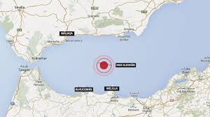

Terremoto de magnitud 6,3 en el Mar de Alborán sacude Andalucía y Melilla

El sismo se ha producido en una zona, una gran franja en la que se concentra gran parte de la actividad sísmica de nuestro entorno, que va desde El Egido (Almería) hasta Alhucemas, en Marruecos. La franja tiene una dirección noreste-suroeste, y en ese misma dirección hay una serie de fallas identificadas. «Ahora las fallas se están moviendo en tierras africanas, lo que significa que habrá más réplicas», agregó Carreño. Hasta el momento se han registrado 27 réplicas, varias de 4,6, según el Instituto Geográfico Nacional.
En Marruecos, un niño de 12 años ha muerto de un infarto en la ciudad de Alhucemas tras sufrir un ataque de pánico al sentir el terremoto y otra persona de 35 años de edad resultó herida al tirarse por la ventana de un segundo piso por el miedo que sintió tras el terremoto, que le recordó el de 2004 de la misma ciudad (donde hubo casi 500 muertos), subrayaron las fuentes.
Al menos 26 personas han resultado heridas leves en Melilla, y han sido atendidas en el servicio de Urgencias del Hospital Comarcal de Melilla por traumatismos, cortes y algunas lesiones. Según ha informado el Instituto Nacional de Gestión Sanitaria (Ingesa), todas han sido dadas de alta.